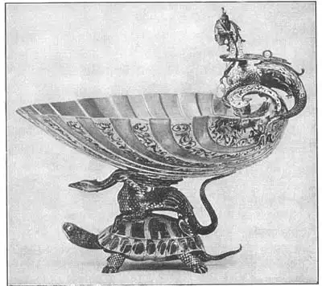
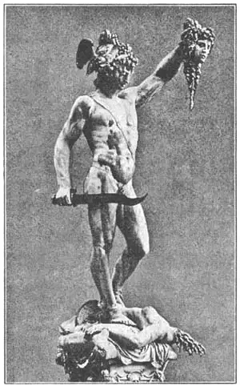

48
CELLINI MAKES HIS PERSEUS
切利尼铸造帕尔修斯铜像

A MAN named Benvenuto Cellini became known as the best goldsmith in Italy. His work in gold and silver and precious stones was so wonderful that the few examples we have now are all in museums and are considered priceless.
Cellini was a goldsmith, but he believed he could do good sculpture too, and although he was very boastful about it, he made good every boast, for his bronze statues turned out to be just as good as he said they would be.
Cellini lived in Florence and the Duke of Florence asked him to make a bronze statue of Perseus killing Medusa. Cellini worked hard and long on the clay model for the Perseus until he thought it was just right. Then came the work of casting the statue in bronze.
Nowadays, when a sculptor wants to make a bronze statue, he makes a clay model first and then sends it to the bronze foundry, which makes the statue in bronze. This is easier for the sculptor because he can put all his time on modeling statues and not have to do also all the work of bronze casting. But during the Renaissance a sculptor like Cellini generally had to make the bronze cast himself, as well as the clay model. This was often a very hard thing for a sculptor to do.
Now, Cellini’s statue of Perseus and Medusa was to be larger than lifesize and many people in Florence said that it would be impossible for Cellini, a goldsmith, to make a good bronze casting of such a big statue. Even the Duke of Florence told Cellini he thought it would be unwise for a goldsmith, who is used to working with tiny jewels, to cast a large bronze statue.
All this discussion, however, made Cellini the more anxious to do the bronze statue. He began by building a furnace to melt the bronze in. Then he dug a pit to put the mold in and connected it with tubes so the melted bronze could run down into the mold and harden. The mold was just the shape of the statue. To make it easier, Cellini cast the Medusa part of the statue first. The Medusa turned out very well indeed.
Then Cellini began the casting of Perseus. This was much harder to do, on account of its greater size and peculiar shape. The fire in the furnace melting the bronze got so hot that the roof of Cellini’s house caught fire. Cellini himself had to work like fury to keep the fire burning in the furnace. He got so exhausted that he suddenly became ill and had to go to bed, telling his helpers just what to do. He felt so sick he thought he was going to die.

No.48-1 A CUP BY CELLINI IN THE METROPOLITAN MUSEUM, NEW YORK
（《杯子》切利尼 制）
Courtesy of the Metropolitan Museum of Art
Before long, one of the helpers came to Cellini’s room and told him the statue was ruined, as the bronze was not melting right. Cellini, in spite of his sickness, jumped out of bed and dashed to the furnace. He was a very hot-tempered man and now he was in such a rage with his stupid helpers that he frightened them so they jumped every time he spoke.
A storm had come up and it began to rain. Cellini sent two men out for more wood for the furnace fire and then the fire got so hot the roof caught again. Cellini ordered some of the helpers to put up boards or carpets to help keep off the rain. Then they stirred the bronze with long iron rods until it began to be the right thickness again.
Suddenly there was a great flash of light and the crash of an explosion. They were all too scared to move. Then Cellini saw that the cap of the furnace had blown off and the bronze was bubbling over the top. So he quickly opened the tubes that would let the metal flow into the mold below.
Still the bronze didn’t flow freely. Cellini thought the great heat had eaten up the metal that was mixed with the copper to make it flow. What was he to do? You’ll never guess what he did.
What he did was to get all the pewter platters, bowls, and dishes in the house and throw them into the melting bronze. Pewter is a soft metal that was often used for dishes. The pewter melted and mixed with the bronze. The bronze flowed and soon the mold was filled. The scheme had worked. Cellini was so pleased he forgot all about his sickness and felt as well as ever. The next morning the servants had to go out and buy a lot of new dishes before they could serve breakfast.
Here is the picture of the finished statue of Perseus killing Medusa, cast in bronze with so much bragging and trouble and excitement, by Cellini. Perseus holds up the head which he has just cut off. He is not looking at it, because that would turn him to stone. Notice the queer-looking sword. Notice also that Cellini has made the blood flowing from Medusa in bronze, too.
The statue was set up in Florence and there it still stands, admired all the more by those who know how hard Cellini worked to cast it.

N048-2 PERSEUS AND MEDUSA
（《帕尔修斯和美杜莎》）
CELLINI（切利尼 制）
【中文阅读】
一个名叫本韦努托·切利尼的人成了意大利最好的金匠。他打造的金、银、宝石等都精美绝伦。如今他的几件作品收藏在博物馆里，堪称无价之宝。
切利尼是金匠，但他相信自己也能制作好的雕像。尽管这很有自夸之嫌，但他每次吹嘘都能兑现。他制作的青铜像正如他所说的那么棒。
切利尼住在佛罗伦萨。佛罗伦萨公爵让他制作一座铜像，刻画帕尔修斯杀死美杜莎时的场景。切利尼开始做帕尔修斯的粘土模型，投了很大精力，花了很长时间，直到感觉满意，才开始浇铸青铜。
今天的雕刻家要想制作青铜像，就要先做个粘土模型，再送到青铜铸造厂浇铸青铜像。这非常轻松，因他无需过问浇铸之事，只要专心制作雕像模型。但在文艺复兴时期，像切利尼这样的雕刻家不仅制作粘土模型，还得亲自铸造青铜像。对雕刻家来说，难度常常很大。
现在看来，切利尼的帕尔修斯和美杜莎雕像要比真人大些。佛罗伦萨很多人都觉得，对切利尼这样一个金匠来说，制作这么大的一座青铜像简直不可思议。甚至连佛罗伦萨公爵都认为，对于做惯了小珠宝的金匠来说，要铸造这么大的铜像实在有点不 明智。
切利尼面对争议，反而更想制作青铜像了。他先建了一座熔炉，用来熔化青铜，然后，挖了一个坑放进模具，再用一根管子把模具和熔炉连接起来，使熔化了的铜沿管子流进模具，冷却硬化。模具按雕像形状而制。为方便省事，切利尼先浇铸雕像的美杜莎那部分，效果很好。
接着，切利尼开始铸造帕尔修斯。由于这部分尺寸很大，造型又奇特，所以就加大了浇铸难度。熔铜的炉火越烧越旺，把切利尼家的房顶烧着了。切利尼为保持炉火不灭，就拼命工作。终因操劳过度突然病倒，只好躺在床上吩咐助手们接替工作。他感觉病情加重，甚至以为就要死了。
没多久，一位助手跑来报告说雕像受毁，因为青铜没能熔化好。切利尼不顾病重，跳下床直奔炉前。切利尼本来就性情暴躁，此刻面对这帮愚蠢的助手们更是暴跳如雷，吓得他们个个胆战心惊。
一场风暴来到，天开始下起雨来。切利尼让两个助手出去找些木材来燃火。再一次炉火上升，又把房顶烧着了。切利尼吩咐助手们在房顶铺些木板或地毯，防止雨漏。接着，助手们用长铁棍搅拌熔浆，直到熔浆的密度恰到好处。
突然，电闪雷鸣，一声巨响，吓得他们动都不敢动。切利尼发现炉盖突然蹦开，熔化的青铜沸腾了，铜液直往上鼓泡。于是，他赶紧打开管道，让熔浆流到下面的模具里。
可是熔浆流动不畅。切利尼想可能是高温将青铜完全熔化了。那怎么办呢？我们怎么也猜不到他接下来要做什么！
他竟然把家里所有的锡镴制品，如盘、碗、碟都扔进了熔炉。锡镴是一种软金属，通常用来制作碟子。锡镴熔化后能混合青铜，使熔浆流动，很快就使模具灌满。计划如期完成了。切利尼非常高兴，顿时忘却了所有的病痛，感觉一如往常。但第二天早上，家里的佣人不得不在早餐前新买许多碗碟。
这雕像的完成包含了切利尼的自夸、接连不断的麻烦以及成功后的喜悦。下图所示乃帕尔修斯杀死美杜莎的场景。帕尔修斯举着刚割下的美杜莎头颅。他没有看这头颅，因那会让他变成石头。注意帕尔修斯手中那支形状奇特的剑。还有，就连美杜莎头颅里流出的血都是青铜浇铸的。
这座铜像起初竖在佛罗伦萨，如今还立在那里。当人们知道切利尼铸造铜像的艰难后，更添一份钦佩之心。